W końcu przyszedł czas na Boliwię! Po nocy spędzonej na terminalu w Calamie, zmęczone suchym klimatem oraz wysokościami znalazłyśmy się na granicy Chile z Boliwią. Tym razem (na granicy) nie sprawdzali w ogóle bagaży, kontrola znajdowała się po środku pustyni otoczonej górami i skałami, a przy wypełnianiu kart wjazdu spotkałyśmy przypadkiem naszego kolegę z Santiago, Alexa! On wybrał drugą, kosztowniejszą opcję przekroczenia granicy – wykupując czterodniową wycieczkę bezpośrednio z San Pedro. My jednak, mimo przygody ze spaniem na terminalu (nasz potencjalny host z couchsurfingu w Calamie odrzucał nasze połączenia, jak próbowałyśmy się do niego dodzwonić), nie żałowałyśmy swojego wyboru.
Byłyśmy w Uyuni wczesnym popołudniem. Po przespacerowaniu się po tym niewielkim mieście szybko doszłyśmy do wniosku, że nie ma co zostawać w nim na dłużej. Udało nam się znaleźć taksówkarza, który był chętny na zabranie nas na pustynię solną za 30 zł od osoby jeszcze tego samego popołudnia (ceny wycieczek zawierających zobaczenie solnej pustyni zaczynały się od 75 zł i wiązały się z zostaniem noc dłużej w Uyuni). Spędziłyśmy tam pół godziny, głównie robiąc głupkowate zdjęcia sobie nawzajem (klasyczna dla tego miejsca zabawa z perspektywą) i podziwiając ten nieziemski krajobraz. Wieczorem byłyśmy tak zmęczone po podróży, że zdołałyśmy tylko zjeść lamę (!) na miejskim targu i o 20 spałyśmy już w hostelu. Po pierwszym dniu mogłyśmy powiedzieć o Boliwii to, co każdy turysta mówi o tym kraju – jest niesamowicie tani. Nocleg kosztował nas 10 zł, obiad natomiast 2,50 zł. Bardzo przyjemna odmiana po Chile i Argentynie.
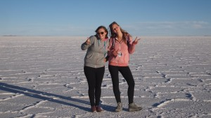
{kind=link}
Następnego dnia o 8 rano byłyśmy już w drodze z Uyuni do Potosi. Nie nasiedziałyśmy się jednak w autobusie – po 20 minutach jazdy okazało się, że spory odcinek drogi jest w naprawie i musimy przejść go na piechotę (po drugiej stronie czekał na nas kolejny autobus). Zdecydowanie rozbudził nas ten 15 minutowy spacerek z plecorami. O drogach i autobusach w Boliwii można by było spokojnie napisać oddzielny artykuł – jak dotąd w żadnym innym kraju nie zaskakiwały nas podróże autobusami tak, jak tutaj. Zdecydowanie największą zaletą tych przejazdów były widoki, warto w tym kraju podróżować za dnia (w nocy i tak nie da się spać przez turbulencje…). Można powiedzieć, że była to pewna forma zwiedzania. Wracając jednak do głównego wątku – mimo niespodziewanej przesiadki, jeszcze tego samego dnia udało nam się dojechać do Potosi. Miejsce to słynie przede wszystkim ze swojej wysokości i ogromnych kopalni. Postanowiłyśmy jednak nie zostawać w tym najwyżej położonym mieście na świecie (nie byłyśmy zainteresowane zwiedzaniem kopalń, a przez wysokość też nie czułyśmy się tam najlepiej) i pojechałyśmy dalej, do Sucre.
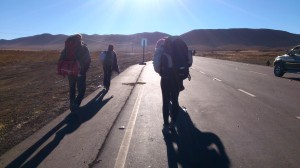
{kind=link}
W Sucre, administracyjnej stolicy Boliwii, byłyśmy umówione z Juan Pablem z couchsurfingu. Na miejscu okazało się jednak, że nie ma u niego miejsca do spania dla dwóch osób i będziemy mieszkać u jego mamy. Trochę byłyśmy zawiedzione, jako że najfajniejsze w couchsurfingu jest spędzanie czasu z miejscowymi i poznawanie miasta z ich perspektywy, ale przystałyśmy na to. Co więcej, okazało się, że Juan Pablo chciałby, żebyśmy zapłaciły za nocleg, bo mama mu pomogła przy jego szkole językowej i chciałby się odwdzięczyć. To już nas bardzo zaskoczyło – w końcu couchsurfing polega na tym, że się kogoś u siebie przyjmuje z dobrej woli, bez oczekiwania zapłaty. Na szczęście nie były to duże pieniądze (mniej niż za hostel), także zostałyśmy u mamy Jana Pawła na dwie noce. Pierwszego dnia przeszłyśmy całe miasto – spędziłyśmy trochę czasu we wspaniałym markecie z jedzeniem (zestawy obiadowe za 3 do 5 złotych, soki ze świeżo wyciskanych owoców, mnóstwo warzyw i owoców oraz mięsa wiszące na hakach), przeszłyśmy się po ładnych uliczkach, zobaczyłyśmy widok z Recoleta… Nie było tu jednak dużo do zwiedzania, jak na stolicę – jeden dzień wystarcza na zobaczenie wszystkiego i z tego, co się zorientowałyśmy, większość turystów zostaje w Sucre właśnie na 1-2 dni, chyba że chcą pouczyć się hiszpańskiego – kursy są tu najtańsze. Drugi dzień był więc organizacyjny (couchsurfing, maile, zapisy na studia/zajęcia, itp.) i wieczorem ruszyłyśmy dalej. Naszym głównym pomysłem na Boliwię było zobaczenie lasu amazońskiego (wiedziałyśmy, że od strony boliwijskiej jest taniej niż w innych krajach). Z naszego research’u wynikało, że możemy tam pojechać na dwa sposoby (transportem ziemnym rzecz jasna, samoloty wykluczyłyśmy, jako że są nieco kosztowniejsze): zataczając koło przez Boliwię od wschodu do zachodu lub jadąc przez Oruro do La Paz i stamtąd pojechać autobusem 24 godziny w jedną stronę. Wiedziałyśmy, że ten autobus jest nieunikniony, stwierdziłyśmy jednak, że wystarczy nam jedna taka przejażdżka, z Rurrenabaque (nasz cel w lesie) do La Paz – wybrałyśmy więc podróż dookoła Boliwii z większą ilością przystanków. O 3 nad ranem wylądowałyśmy w małej, turystycznej wiosce Samaipata, położonej na północny-wschód od Sucre. Wykończone, nie wiedziałyśmy czy nie jechać od razu dalej (pobliska dyskoteka i wysypujący się z niej pijani lokalesi trochę straszyły). Na szczęście udało nam się znaleźć otwarty (w miarę otwarty.. musiałyśmy obudzić obsługę) hostel, który później okazał się być jednym z ładniejszych, w którym byłyśmy.
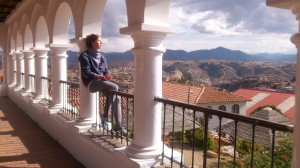
{kind=link}
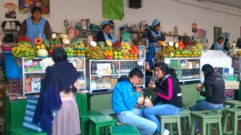
{kind=link}
Gdy się obudziłyśmy, okazało się, że jesteśmy w uroczym miejscu. Po spędzeniu ostatnich dwóch tygodni na pustyniach, otoczonych co najwyżej skałami, odległymi górami i solą odetchnęłyśmy widząc soczysto-zielone wzgórza porośnięte drzewami. Czapi wybrała się z przypadkowo spotkaną parą turystów (Francuską i Finem) na wycieczkę turystyczną na wzgórze El Fuerte, Lula postanowiła zostać, by nacieszyć się spokojem tego miasteczka. Ze szczytu wzgórza rozciągał się piękny widok na dolinę, a na samym wzgórzu atrakcją są tajemnicze rzeźby skalne pozostawione przez Inków. Cieszyłyśmy się, że spędziłyśmy dzień w Samaipacie, a nie w położonym niedaleko Santa Cruz, które, jak się potem okazało, było głośnym miastem pełnym ludzi i samochodów.
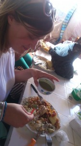
{kind=link}
Z Santa Cruz chciałyśmy wziąć nocny autobus do Trinidadu, także wizyta w tym mieście była nieunikniona. Przyjechałyśmy tam minibusem z Samaipaty, który zostawił nas na drugim końcu miasta daleko od terminala, także udało nam się „zwiedzić” tę metropolię podczas przedzierania się autobusem miejskim do naszego celu. Było to chyba najbardziej chaotyczne i zaludnione miasto jakie widziałyśmy dotychczas podczas naszej podróży. W tym tropikalnym, wilgotnym klimacie byłyśmy całkowicie zagubione pomiędzy tryliardem ludzi na skuterach, samochodach i busach, pieszymi i licznymi barami z kurczakami (chyba jeszcze o tym nie wspomniałyśmy, że w Boliwii jedzą kurczaki cały dzień – na śniadanie, obiad i kolację). Gdy udało nam się w końcu dojechać na terminal zostałyśmy zaatakowane przez tłum ludzi, namawiających nas na skorzystanie z ich oferty transportowej. Czułyśmy się jak na innej planecie lub wśród hatifnatów – nie mogłyśmy się powstrzymać od śmiechu, jak każdy w tym samym czasie próbował nam coś sprzedać. Boliwia jest zdecydowanie żywsza i głośniejsza, pod tym względem, niż Chile czy Argentyna. Nawet w autobusie normą jest, że przez pierwsze pół godziny (do godziny!) jakiś elegancko ubrany pan opowiada o pasożytach, które ludzie mają w brzuchach i próbuje sprzedawać ziołowe herbatki i leki. Początkowo to też nas śmieszyło, ale dłuższe słuchanie o robakach w żołądku potrafi być męczące.
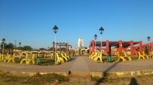
{kind=link}
O 6 rano byłyśmy już w Trinidadzie. Ukrop już lał się z nieba. To miasto, dużo mniejsze niż Santa Cruz, miało być naszym przystankiem na kolejną noc. Okazało się jednak, że autobusy do Rurrenabaque kursują raz dziennie, o 10 rano, a samo miasto nie ma za wiele do zaoferowania. Przeszłyśmy się po nim spacerem, od razu po przyjeździe. Tu już było dużo więcej egzotycznej roślinności, same małe, niewykończone betonowe domeczki, ludzie na skuterach i centrum składające się z kilku szeregów żółtych ławek. Jako że nie miałyśmy żadnego hosta, który by nas przyjął w tym miejscu, ruszyłyśmy od razu do Rurre. Ten autobus także zapewnił nam wiele atrakcji: przepływanie z nim na tratwie przez rzekę, oglądanie niesamowitych widoków fauny i flory amazońskiej, obserwowanie wsiadających myśliwych z kurami w torbach i bronią pod pachą… Nie wspominając o nieutwardzonej drodze, która była tak błotnista, że nieraz prawie się zakopaliśmy. Tak, jak wspominałyśmy już wyżej – o podróżowaniu autobusami przez Boliwię można by napisać oddzielny tekst. Niezwykłe doświadczenie, zwłaszcza, gdy wybiera się najtańsze opcje – byłyśmy jedynymi turystkami w każdym z tych busów, więc wzbudzałyśmy niemałe zainteresowanie.
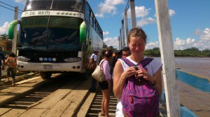
{kind=link}
Po 14 godzinach jazdy byłyśmy w końcu w Rurrenabaque. Tu miał nas przyjąć Miguel – jedyny aktywny użytkownik couchsurfingu w całym miasteczku. Trochę go zaskoczyłyśmy naszą wizytą, ponieważ zapowiadałyśmy, że będziemy dopiero za 4 dni, a nie dostał wiadomości głosowej, którą mu nagrałyśmy z Trinidadu. Na szczęście, mimo tego, chętnie nas odebrał z dworca i przyjął u siebie w domu, w którym mieszkał z rodzicami i rodzeństwem (oczywiście mówił, że to rodzina mieszka z nim, a nie on z nimi…). Poza nami przyjmował w tym czasie jedną Francuzkę, Anais, ale ta akurat była na trzydniowej wycieczce w lesie, także nie było problemu, żebyśmy zajęły w tym czasie jej łóżko.
Rurrenabaque okazało się być zupełnie inne niż wszystkie miejsca, w których byłyśmy dotychczas. Przypominało nam bardziej jakiś kraj azjatycki niż południowoamerykański: klimat jest już bardziej wilgotny i ciepły, a miasteczko składa się z samych podmokłych, ziemnych uliczek, drewniano-bambusowych chatek, pięknej rzeki, z licznymi drewnianymi łódeczkami, dookoła miasta rozciągają się wzgórza pokryte pięknymi drzewami i krzewami, no i tu już wszyscy ludzie przemieszczają się tylko na skuterach. Pierwszego dnia naszego pobytu, Miguel zabrał nas i trzy dziewczyny z Niemiec, które poznał dzień wcześniej, na basen położony na wzgórzu Mirador (jak nam powiedziano, wzgórze to w całości należy do pewnego szwajcarskiego milionera), z widokiem na CAŁĄ okolicę. Od tego momentu byłyśmy całkowicie zauroczone Rurre.
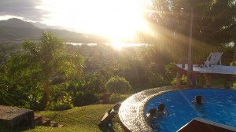
{kind=link}
Kolejnego dnia Czapi pojechała na dwudniową wycieczkę do selvy (lasu amazońskiego). Lula, zachwycona tym jedzeniowym rajem, została w Rurre i próbowała lokalnych przysmaków, takich jak mięso małpy, poznała Anais (wcześniej wspomnianą Francuskę z couchsurfingu u Miguela), która wróciła ze swojej wycieczki, a także Phillipa – szamana, który co kilka dni prowadził ceremonię ayahuaski, w której planowałyśmy wziąć udział, tyle że w Kolumbii. Czapi, wraz z trójką Izraelitów (w Rurre jest ich mnóstwo, wszystkie menu i szyldy są również po hebrajsku) oraz parą Niemców szukała w tym czasie zwierząt w lesie, próbowała soków drzew i termitów, poznawała różne lecznicze zastosowania roślinności amazońskiej i broniła się przed komarami, których na szczęście było mało w tym czasie, ponieważ codziennie padał deszcz. Po powrocie Czapi była zaskoczona nagłą wiadomością o tym, że możemy już teraz wziąć udział w ceremonii i miała wątpliwości, czy chce to zrobić tak szybko, jednak po poznaniu Phillipa (szamana) osobiście i po spędzeniu kolejnego pięknego dnia w Rurrenabaque szybko się przekonała do tego pomysłu. Najbliższa ceremonia była za dwa dni, miałyśmy więc czas się „oczyścić” (zaleca się nie jeść mięsa, soli i nie pić alkoholu na minimum jeden dzień przed). Anais musiała już jechać dalej, do La Paz, Miguel natomiast zdecydował się wziąć udział w ceremonii razem z nami (Phillip jest jego kolegą i namawiał go od dawna, ale dotychczas Miguel jeszcze nie spróbował). Poza nami była jeszcze Lisa, Kanadyjka, która została po ostatniej ceremonii na kolejną, ponieważ nie była usatysfakcjonowana poprzednim razem, chciała dowiedzieć się więcej od tej mądrej rośliny.
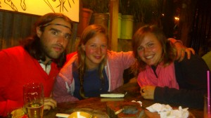
{kind=link}
Ceremonię Filip przeprowadza w specjalnie przeznaczonym do tego miejscu – w domu Ayahuaski – lesie amazońskim. Czapi więc, po jednym dniu, wróciła do lasu, Lula natomiast miała okazję poznać go po raz pierwszy. W całkowitej harmonii z naturą, od czasu do czasu przeprowadzając ceremonię i ciesząc się z każdego pięknego dnia w lesie, mieszkało tam kilkoro wolontariuszy Filipa. Miejsce faktycznie (tak, jak wcześniej zapowiadał Filip) było niesamowite.
Sama ceremonia przebiegła lepiej niż mogłyśmy się spodziewać. Filip wydawał z siebie niesamowite dźwięki prowadząc ceremonię, których efekt wzmacniany był szumem rzeki i liści miliona gatunków roślin. Wszystko to wprawiało w magiczny klimat lasu i oddawało cześć Babci Ayahuasce, najmądrzejszej z roślin.
Po ceremonii zaleca się pozostanie w lesie na jeden dzień, by wyciszonym i uduchowionym przemyśleć wszystko to, co „zobaczyło się” w czasie ceremonii. Wolontariusze, którzy następnego dnia (ceremonia rozpoczyna się wieczorem i trwa około 5 godzin, by od razu po niej położyć się spać) przygotowywali śniadanie, z uśmiechem na twarzy mówili, że „świecimy” dobrą energią. Po śniadaniu Filip ponownie zaprosił nas do świątyni, by każdy podzielił się swoimi wrażeniami z ceremonii oraz interpretacjami tego, co „pokazała” każdemu z osobna ayahuasca.
Na pewno było to bardzo mocne przeżycie, które nie sposób opisać uniwersalnie. Ayahuasca do każdego podchodzi z osobna, każdemu pokazuje to, co uważa za stosowne w danym czasie. Możemy ogólnie powiedzieć, że byłyśmy usatysfakcjonowane tym, co przeżyłyśmy i że na tamtą chwilę było to tak mocne, że zastanowimy się jeszcze czy powtarzać ceremonię tak szybko (tj. po dwóch miesiącach) w Kolumbii.
Miałyśmy wielkie szczęście (nie opuszcza nas!), bo tego samego dnia (21 czerwca) okazało się, że obchodzony jest Nowy Rok Inków – od tej pory dni są coraz dłuższe, a, jak wiadomo, słońce było najważniejszym inkaskim bogiem. Filip i wolontariusze zaprosili nas z tej okazji, byśmy zostały jeszcze jedną noc w ich obozie w lesie i świętowały razem z nimi. Przy ognisku każdy z osobna miał przygotować coś dla Pachamamy (Matki Ziemi), podziękować za poprzedni rok i poprosić o pomyślny nadchodzący. My chciałyśmy bardzo podziękować za tę podróż, więc podarowałyśmy jej, między innymi, naklejkę QueSigue.
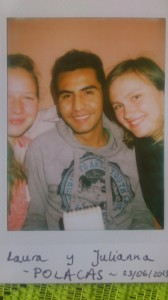
{kind=link}
Nadszedł czas by pożegnać się z Rurrenabaque i z Miguelem i udać się do La Paz. Wiązało się to z kolejną długą autobusową przejażdżką, ale tym razem byłyśmy przygotowane (tabletki nasenne, picie, pyszne ciasto bananowe, od którego uzależniłyśmy się będąc w Rurre, i mokre chusteczki – to nasz niezbędnik). Do La Paz dojechałyśmy nad ranem. Wzięłyśmy taksówkę (high-life, ale dla przykładu, 10-minutowa podróż taksówką w Boliwii kosztuje około 5 polskich złotych, bilet autobusowy natomiast 70 groszy), by dojechać na adres wskazany przez następnego hosta. Alex mieszkał na najwyższym piętrze budynku sąsiadującego z Ritzem, w dosyć prestiżowej dzielnicy, w miarę blisko centrum. Brzmi świetnie, ale niestety sam host nie był za bardzo zainteresowany kontaktem z nami, cały czas rozmawiał przez telefon, a gdy już coś do nas mówił to wychodząc z domu… Wykorzystałyśmy jednak to, że miał agencję turystyczną organizującą wypady rowerowe na Death Road (słynna „droga śmierci” zawdzięcza swą nazwę temu, że wielu śmiałków poległo, próbując na rozpędzonym rowerze utrzymać się na jej zakrętach i spadło w siną dal w przepaść). Jak na zjazd rowerowy ta atrakcja jest śmiesznie droga, jednak Czapi od początku była bardzo zdecydowana, że chce to zrobić. Lula zgodziła się jej towarzyszyć, ale jadąc security busem (wcale nie czuła się w nim tak secure – kierowca był jednym z gorszych w całej Boliwii, a może i lepszych, zależy co kto woli i na ile gardzi swoim życiem…) i tym sposobem unikając opłaty. Poza nami, w wycieczce brali udział dwaj Izraelici, jeden Brazylijczyk oraz jeden Chilijczyk. Najpierw zostaliśmy wywiezieni na sam szczyt trasy, gdzie było na tyle wysoko, że gdzieniegdzie leżał śnieg (dla Brazylijczyka to było wyjątkowe doświadczenie – po raz pierwszy widział go z bliska i dotykał – był przeszczęśliwy). Tam wszyscy dostali profesjonalne stroje, kaski, ochraniacze i rowery. Pierwsza część zjazdu prowadziła po asfalcie, druga natomiast składała się z miejscami bardzo wąskiej kamienistej drogi nad przepaścią. Do tego od początku drugiej połowy zjazdu towarzyszył nam deszcz (był to wszakże zjazd do lasu amazońskiego), także trzeba było uważać, żeby się nie poślizgnąć, no i wszystkich (oprócz Luli, która szczęśliwa ze swojej chytrości i przebiegłości, obserwowała wszystko z fotela pasażera) przemoczyło do suchej nitki. Na koniec trasy dojeżdżało się do ośrodka w lesie, gdzie zapowiadano obiad i basen. Basen owszem był, ale bez wody. Pocieszyliśmy się więc słynnym, 7-procentowym piwem Judas i w szampańskich humorach wróciliśmy busem do La Paz (zmiana wysokości i zmęczenie nieco wzmocniło efekt trunku).
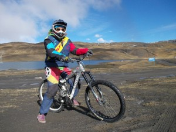
{kind=link}
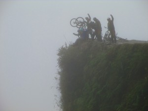
{kind=link}
W domu Alexa wciąż nie czułyśmy się komfortowo. Na poprawę humoru i jako nagroda za przeżycie Drogi Śmierci wyruszyłyśmy na zakupowe szaleństwo (wcześniej na każdym kroku upewniałyśmy się, że właśnie w La Paz wszystko, co do tej pory nas kusiło, jest najtańsze)! W rezultacie kupiłyśmy 8 kg artesaniów na głowę i zaczęłyśmy się zastanawiać, co z tym teraz zrobić… Zaczęłyśmy nowe dochodzenie – skąd, po pierwsze, najtaniej, po drugie – najbezpieczniej, wysłać nasze pamiątki. Miałyśmy trzy wyjścia: 1. wysłać wszystko od razu z La Paz i mieć z głowy; 2. dotargać się jakoś do Limy i mieć pewność, że dojdzie (oraz niektórzy sugerowali, że wręcz wysłanie takiej paczki z Limy może wyjść taniej); 3. przemęczyć się z tym dodatkowym bagażorem do końca naszej podróży, zaoszczędzając na wysyłce, ale licząc się z tym, że na lotnisku będą mogli policzyć nam za nadbagaż. W międzyczasie Alex uprzejmie zasugerował nam wyjazd ze swojego mieszkania, mówiąc, że przecież same napisałyśmy, że chciałybyśmy zostać na 1-2 noce. Na szczęście nie był on jedyną osobą z La Paz, która odpisała nam na couchsurfingu. Profil Lalo wydawał nam się trochę dziwny, dlatego nie wybrałyśmy go w pierwszej kolejności. Teraz jednak potrzebowałyśmy spanka na „jeszcze jedną noc” (wiadomo, jak to bywa, gdy nagle jest wygodnie – w rezultacie zostałyśmy na trzy noce…) i zadzwoniłyśmy do niego z pytaniem, czy propozycja jest aktualna. Znowu okazało się, że mamy wielkie szczęście w tym całym nieszczęściu, bo to Lalo dopiero miał niezłą chatę! Mieszkał w luksusowym budynku w nowej części La Paz, świetnie gotował, ciągle dolewał nam wina, miał ciepłą wodę pod prysznicem (to dopiero coś! Jego prysznic zaliczamy do TOP 5 na naszym wyjeździe) i kartę stałego klienta w SPA w najdroższym hotelu w La Paz (co wiązało się z tym, że zostałyśmy tam zaproszone). Podróż z mieszkania Alexa do miejsca, w którym miałyśmy spotkać się z Lalo (luksusowy hotel ze SPA) pomogła nam podjąć decyzję o wysłaniu naszego NADBAGAŻU jeszcze tego samego dnia, a sio! Nie wiemy, jak mogłyśmy myśleć, że będzie nam się chciało przejechać z tym przez kolejne 3 kraje, haha!
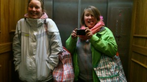
{kind=link}
Można więc powiedzieć, że u Lalo znowu byłyśmy księżniczkami. Zrekompensował nam ostatnie dwa dni spędzone u Alexa, gdzie czułyśmy się po prostu nieswojo (co dziwne, Alex pożegnał nas bardzo ciepłym przytulasem), a pobyt u niego niewiele miał wspólnego z główną ideą couchsurfingu, jaką jest przyjazna interakcja między hostem a surferem. Lalo ma 37 lat, ale, jak już wiemy, to zupełnie nieistotne. Ma uśmiech przyklejony do twarzy, widać było, że sprawia mu wielką przyjemność to, że może nas ugościć. Miałyśmy swój pokój, łazienkę z czystymi ręcznikami, mydełka, a gdy Lalo był w pracy jedzenie podawała nam o konkretnych godzinach jego pokojówka… Pierwszego dnia u Lalo mijała równo połowa naszego wyjazdu – super dzień zwieńczyła degustacja pysznego wina z Chile i Boliwii oraz serów i mortadeli. Kolega Lalo, Mauricio, który świętował z nami, przyznał, że, gdy jest w La Paz, często woli zatrzymać się u Lalo niż u swoich rodziców, ze względu na gościnność Lalo i jego zamiłowanie do dobrego jedzenia.
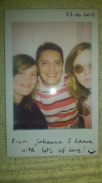
{kind=link}
Nadszedł czas by opuścić La Paz (ponadto byłyśmy do tego zmuszone, bo Lalo miał zaplanowaną randkę na ten wieczór i głupio by było, gdybyśmy podczas niej były u niego w mieszkaniu!) i zacząć przedostawać się do Peru. Pojechałyśmy więc do Copacabany, gdzie udałyśmy się na całodniową przechadzkę po wybrzeżu wielkiego jeziora Titicaca. A stamtąd już rzut beretem do Peru…